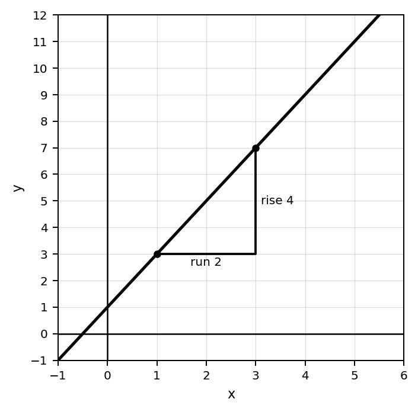
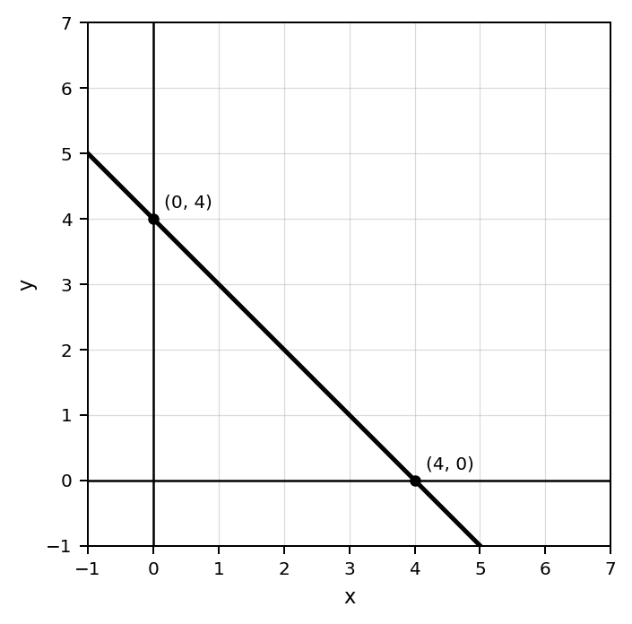
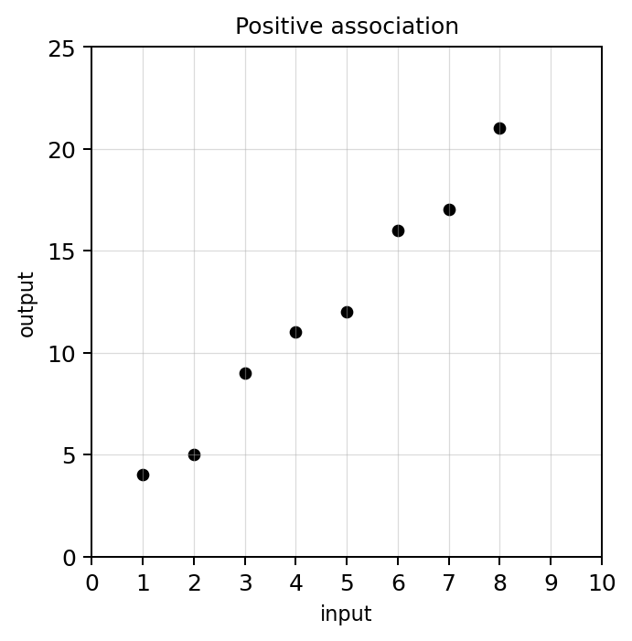
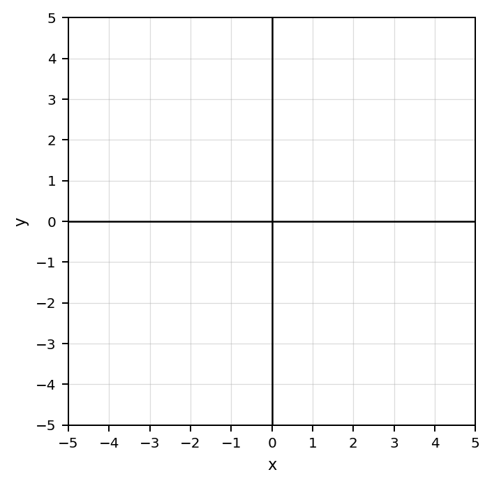
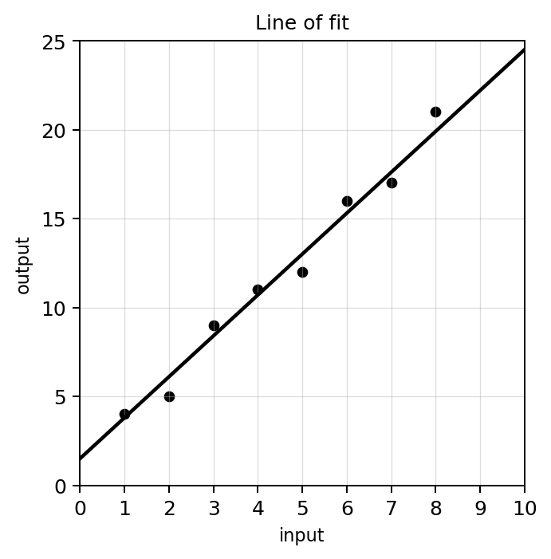
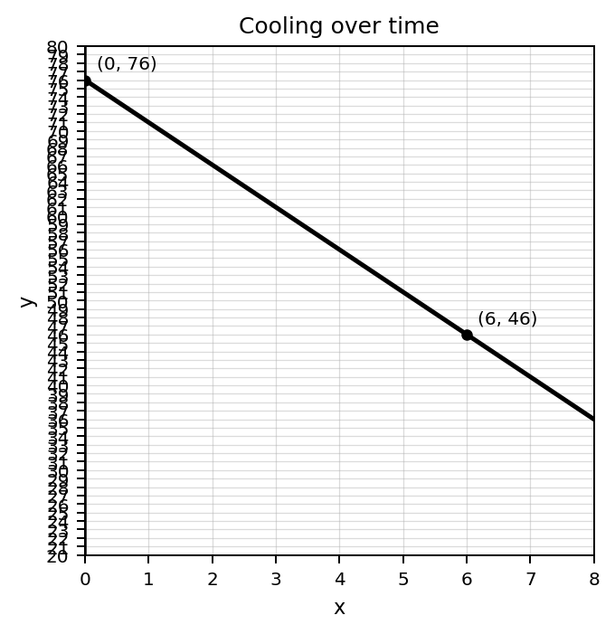
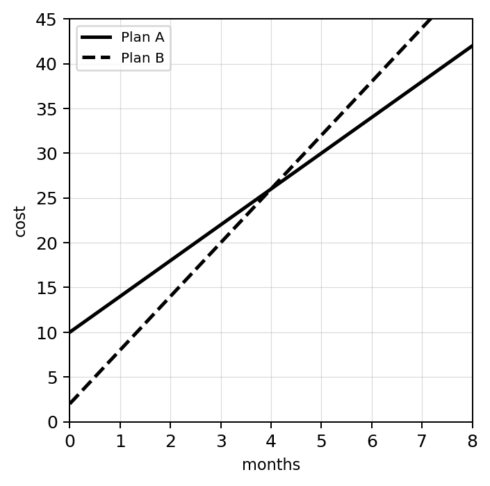
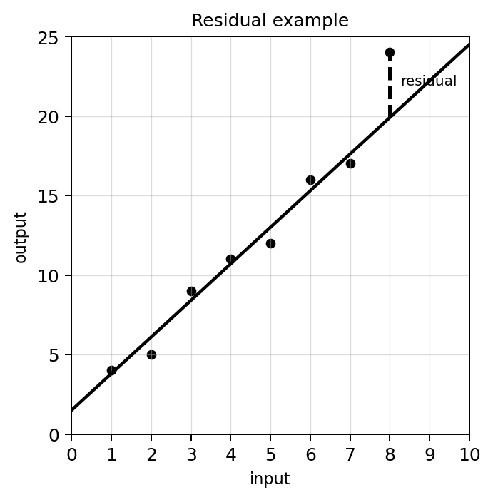

Students will analyze, represent, and model linear relationships in order to interpret constant rate of change, make predictions, and connect equations, tables, graphs, and contexts.
| Rung | I Can Statement | DOK | Level |
|---|---|---|---|
| 8 | I can create and evaluate linear models using graphs, tables, equations, contexts, and data, then justify predictions and decisions using mathematical evidence. | DOK 4 | Above |
| 7 | I can compare, critique, and revise linear models across multiple representations and explain which model or representation is most useful for a situation. | DOK 4 | Above |
| 6 | I can analyze slope, intercepts, linear equations, and data displays to explain structure, identify misconceptions, and justify conclusions. | DOK 3 | Essential |
| 5 | I can interpret and defend the meaning of rate of change, starting value, predictions, and linear model parameters in context. | DOK 3 | Essential |
| 4 | I can write and graph linear equations from tables, graphs, and situations and connect slope and intercepts across representations. | DOK 2 | Essential |
| 3 | I can calculate and interpret rate of change from graphs, tables, and ordered pairs, and use it to describe linear relationships. | DOK 2 | Essential |
| 2 | I can identify slope, intercepts, ordered pairs, linear equations, scatterplots, and lines of fit using correct vocabulary and notation. | DOK 1 | Essential |
| 1 | I can recognize linear relationships in graphs, tables, equations, contexts, and data displays and identify basic features. | DOK 1 | Essential |
Format: 3–5 minute warm-up, vocabulary check, graph feature check, slope/intercept identification, or exit ticket
Purpose: Check whether students can recognize linear representations, identify slope and intercepts, read graphs and tables, and use linear modeling vocabulary correctly.
Use the graph below. Is the rate of change positive, negative, zero, or undefined?

Find the rate of change from the table.
| $x$ | 0 | 1 | 2 | 3 |
|---|---|---|---|---|
| $y$ | 4 | 7 | 10 | 13 |
For $y=2x+1$, identify the slope and $y$-intercept.
Use the graph. Identify the $y$-intercept.

Identify the slope and starting value in the situation: A taxi charges $5 plus $3 per mile.
Which has the greater rate of change: $y=3x+8$ or $y=5x+1$?
Identify the association shown in the scatterplot: positive, negative, or no clear association.

What does a residual measure?
Format: Exit ticket, partner check, whiteboard response, graphing task, mini-quiz, or short written task
Purpose: Check whether students can calculate slope, graph linear functions, write equations from representations, compare linear relationships, and use linear models for routine predictions.
Use the graph and slope triangle to calculate the slope. Then explain what the rise and run represent.
Calculate the slope between $(1,4)$ and $(5,16)$. Show your work.
Find the rate of change from the table and decide whether it is constant.
| Time | 0 | 2 | 4 | 6 |
|---|---|---|---|---|
| Distance | 3 | 9 | 15 | 21 |
Graph $y=2x+1$ on the grid. Use at least three points.

Write an equation for the table.
| $x$ | 0 | 1 | 2 | 3 |
|---|---|---|---|---|
| $y$ | 5 | 9 | 13 | 17 |
A gym charges $30 to join and $12 each month. Write an equation for total cost $C$ after $m$ months.
Two jobs pay as follows: Job A pays $9 per hour plus a $20 bonus. Job B pays $12 per hour. Write equations and compare pay after 5 hours.
Use the line of fit to estimate the output when the input is 8.

Format: Constructed response, representation analysis, strategy comparison, error analysis, data-model critique, or discourse prompt
Purpose: Check whether students can justify linear representation matches, interpret parameters in context, critique incorrect reasoning, and defend predictions using mathematical evidence.
A student says the slope of the line is 1 because the line goes up. Use the graph to critique the statement and provide the correct reasoning.
Explain why slope can be interpreted as a unit rate. Use a real-world example.
A table has equal changes in $x$ but unequal changes in $y$. Explain why the relationship is not linear.
| $x$ | 0 | 1 | 2 | 3 |
|---|---|---|---|---|
| $y$ | 2 | 6 | 12 | 20 |
A student graphs $y=2x+1$ by starting at 2 and going up 1 each time. Analyze the error and correct the graphing strategy.
Use the cooling graph to explain the meaning of a negative rate of change in context.

Explain how the table below reveals both slope and starting value. Then write the equation.
| $x$ | 0 | 1 | 2 | 3 |
|---|---|---|---|---|
| $y$ | 12 | 20 | 28 | 36 |
Use the two-plan graph to decide which plan is better for short-term use and which is better for long-term use. Justify with evidence.

Use the residual graph to explain what a positive residual means in context.

Format: Brief performance task, modeling task, critique-and-revise task, design task, or extended application
Purpose: Check whether students can transfer linear modeling to unfamiliar situations, design and compare models, critique assumptions, and justify decisions using equations, graphs, tables, and data.
Create a real-world situation with a positive constant rate of change. Include a table, graph description, and interpretation of the slope.
Design two contexts with the same slope but different starting values. Explain why the rates match but the situations are different.
Use the cooling graph to create a story and explain the limitations of assuming the same linear pattern continues forever.
Use the blank grid to design a line that starts above 0 and decreases. Write the equation and a matching context.
Create a context, table, graph, and equation for a linear relationship with slope 7 and starting value 15. Explain how all four representations match.
Use the two-plan graph to write a recommendation for a customer. Your answer must depend on how many months the customer plans to use the service.
Create two competing plans where one has a higher starting value but a lower rate of change. Determine the break-even point and explain the recommendation.
Use the scatterplot and line of fit to make a prediction, then explain one reason the prediction may not be exact.